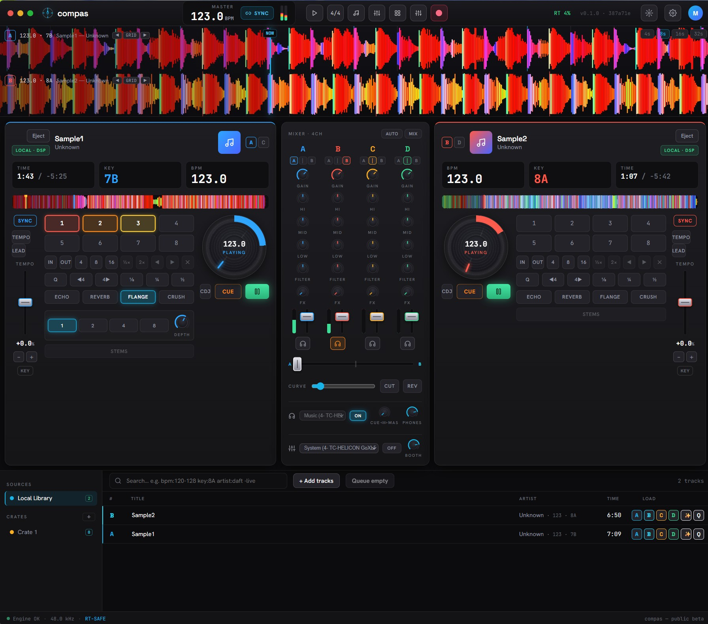

DSP
True DSP on local files
In-RAM decoding with a cubic-interpolated play-head: instant seek, varispeed, 3-band EQ, and an HPF/LPF filter — all real-time-safe.
Compás DJ · Open-source · MIT · Rust audio engine
Four decks, true DSP on your local files — beatgrid, key, EQ, filter, varispeed, key-lock, beat loops, jog-wheel scratch, and an echo + reverb FX rack. All real-time-safe.
Compás DJ is the DJ app in the Compás family — a shared Rust audio core, focused products on top. A Compás Studio DAW is in the works.
Open-source · MIT · Windows, macOS & Linux installers via GitHub Releases
compas is early and under active development. Builds are not yet code-signed, so on first launch Windows SmartScreen shows "More info → Run anyway" and macOS shows "unidentified developer" (right-click the app → Open). Hit a bug? Open an issue ↗ — Windows & macOS test reports especially welcome.

Open-source, MIT
Read the engine, build it yourself, own your workflow. No subscription, no lock-in.
Rust audio core
Lock-free, allocation-free audio thread. Native builds for Windows, macOS & Linux.
Honest about the mix
Real DSP on your local files — no faked sync, no smoke. What you hear is what it does.
The performance surface mirrors the booth — decks, mixer, FX, and beat-aligned waveforms — driven by a lock-free Rust engine.
DSP
In-RAM decoding with a cubic-interpolated play-head: instant seek, varispeed, 3-band EQ, and an HPF/LPF filter — all real-time-safe.
ANALYSIS
Spectral-flux tempo + beat-phase detection draws a real grid; Krumhansl–Schmuckler key detection in Camelot notation.
WAVEFORMS
A fixed NOW playhead with the track scrolling under it, band-colored lanes, a beat-aligned grid, and 4–32 s zoom.
SYNC
Match decks with one click, or ride the tempo fader and nudge by ear — vinyl-style varispeed by default.
PERFORM
Master-tempo key-lock (tempo without pitch), a draggable jog-wheel scratch, beat loops, hot cues, and an echo + reverb FX rack — all on the lock-free audio thread.
CONTROLLERS
Map MIDI and HID controllers with full LED/motor feedback. Bundled profiles for Pioneer DDJ-400 / FLX4 and Akai MPK Mini / LPD8.